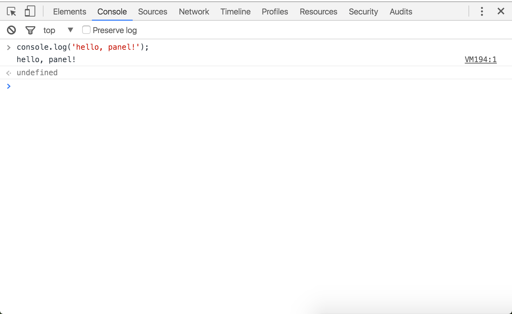
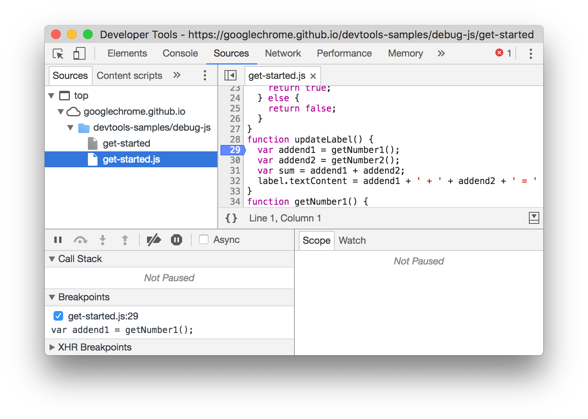
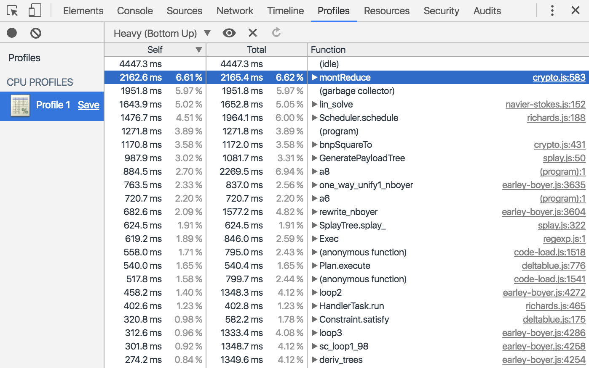
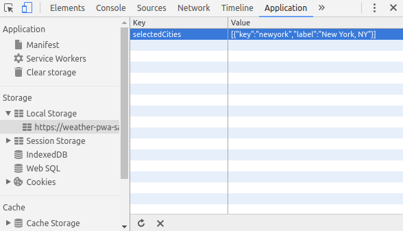
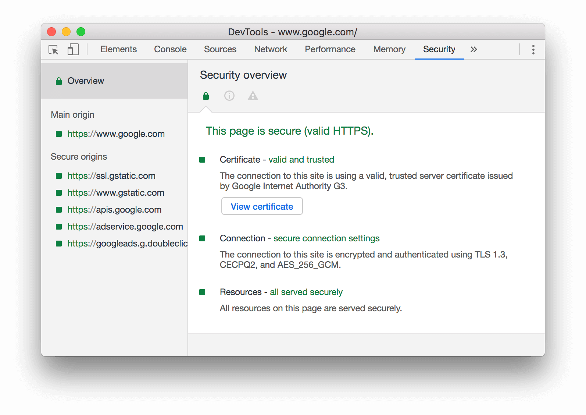

Gunakan Device Mode untuk membangun pengalaman web yang sangat responsif dan berorientasi seluler.

Gunakan panel Elements untuk mengulang pada layout dan desain situs Anda dengan memanipulasi DOM dan CSS secara bebas.

Gunakan Console untuk merekam informasi diagnostik ke dalam log selama development atau gunakan sebagai shell untuk berinteraksi dengan JavaScript di laman.
Debug JavaScript menggunakan breakpoint di panel Sources atau hubungkan file lokal melalui Workspaces untuk menggunakan editor langsung DevTools.
Gunakan panel Network untuk mendapatkan wawasan mengenai sumber daya yang diminta dan diunduh serta optimalkan kinerja pemuatan laman.

Gunakan Timeline untuk meningkatkan kinerja waktu proses laman dengan merekam dan mempelajari beragam kejadian yang terjadi selama daur hidup situs.

Gunakan panel Profiles jika Anda memerlukan lebih banyak informasi daripada yang disediakan oleh Timeline, misalnya untuk melacak kebocoran memori.
Gunakan panel Resources untuk memeriksa semua sumber daya yang telah dimuat, termasuk database IndexedDB atau Web SQL, storage sesi dan lokal, cookie, Cache Aplikasi, gambar, font, dan stylesheet.
Gunakan panel Security untuk men-debug masalah materi campuran, masalah pada sertifikat, dan sebagainya.
